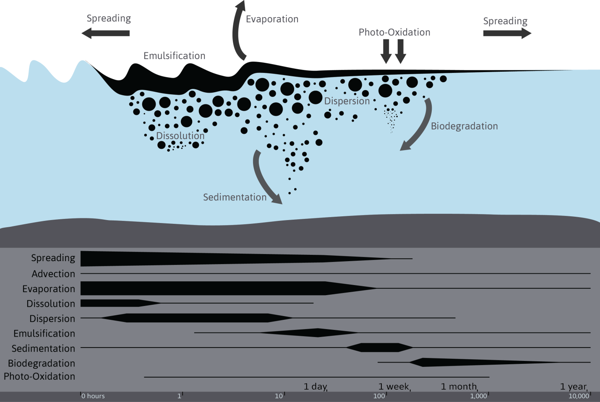

Oil Spill Modelling
New Zealand
Oil Spill Analysis in New Zealand
In April 2010, the Deepwater Horizon disaster in the Gulf of Mexico highlighted the wide-scale impacts that can be caused by a catastrophic deep sea well failure. In 2013, Greenpeace New Zealand raised concerns about exploratory drilling operations for deep sea oil off the west coast of New Zealand’s North Island in the Taranaki Basin and the east coast of New Zealand’s South Island in the Canterbury Basin.
We provided an evaluation of the likely dispersal trajectory of a deep water oil spill at the two proposed exploration sites. The analysis used industry standard numerical modelling techniques to conduct an oil-spill trajectory analysis and determine the extent of oil propagation, dispersion and beaching in the event of a deep water blowout.
The study highlighted the potential impact of several scenarios of deep sea well failures. The report received national coverage through different medias including written press, television and radio. The main numerical modelling results are presented in an interactive visualisation platform hosted by Greenpeace New Zealand for non-scientific audience. A more detailed report of the analysis is publically available for stakeholders and scientists.
Socio-economic impact analysis at two source sites in New Zealand.
Fate of oil at sea and modelled processes.